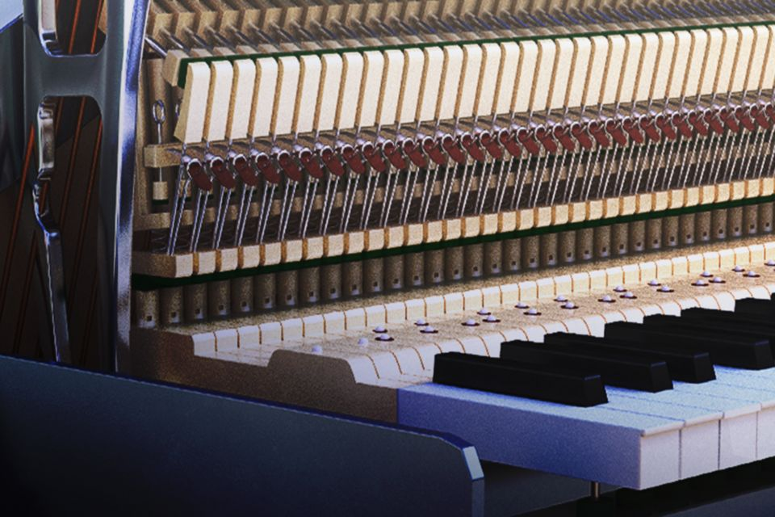

About
I've played piano most of my life. Below are some recordings and videos.

Corda Carol
This is a song written mostly using the Native Instrument sample library of the Una Corda piano, a custom made contemporary piano originally created by David Klavins.
The piano only has one string per key, which gives it a uniquley pure sound.

30 Minute Ambient Piano Improvisation
Spontaneous 30 minute long piano improvisation for calm background music.
Recorded using Spectrasonics Keyscape.